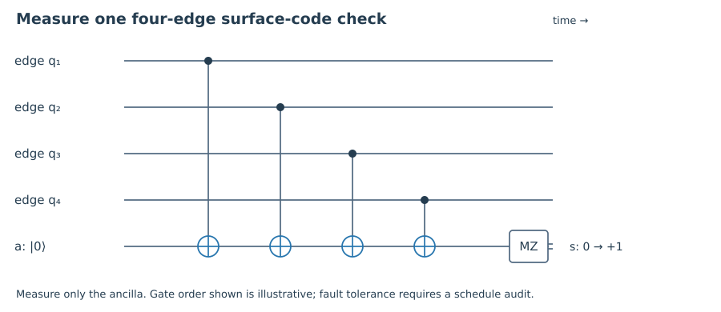

1. Quick check §
How many data qubits are on an L=4 toric lattice?
Hint 1
Count horizontal and vertical edges.
Worked solution
There are 2L²=32 physical data qubits.
Chapter 07 · Draft lesson
How can local parity checks protect information stored in a global geometric pattern?
Starting point: Chapters 1–6; CSS checks, distance, and syndrome decoding.
Anchor example: A square lattice with periodic boundaries, followed by a planar code patch.
Method: Interpret Pauli errors as chains, their syndromes as endpoints, and logical operators as nontrivial paths.
Watch for: A toric code and a planar surface-code patch have different boundaries and logical-qubit counts.
This lesson includes explanations, worked examples, and problems with solutions. Advanced results whose proofs are outside the chapter are identified explicitly.
Our small codes use checks involving several qubits that may be far apart in a device. Suppose instead the hardware allows reliable interactions mainly between neighbors. Can protection be built from local checks? Surface codes answer this by putting the constraints on a lattice and storing logical information in features that no single local check can see.
Begin with an L×L square lattice whose opposite sides are identified, so it lies on a torus; take L≥3. Put a physical qubit on each edge. There are L² horizontal and L² vertical edges, giving n=2L². For each vertex v, define Aᵥ as the product of X on its four incident edges. For each face f, define B𝒻 as the product of Z on its four boundary edges.
Why do these checks commute? A vertex and a face share either zero or two edges. In the latter case, the two local X/Z anticommutations cancel. Checks of the same type commute automatically. We therefore have a CSS stabilizer construction using bounded-weight local constraints.
There are L² checks of each type, but not 2L² independent constraints. Multiplying every vertex check gives identity, because each edge appears twice. Multiplying every face check also gives identity. On this connected periodic square lattice those are the only relations of their respective types. Thus r=2L²−2 and k=n−r=2. The toric code stores two logical qubits.
For L=3, there are eighteen data qubits, nine vertex checks, and nine face checks, with sixteen independent constraints. This small example can be represented entirely by binary incidence matrices. Checking cross-orthogonality and rank is a useful way to verify the geometric argument before reasoning about a larger device.

Worked check 7.1. Why should we not count all eighteen checks as independent for L=3?
The product of the nine vertex checks is identity, and so is the product of the nine face checks. Each relation removes one independent constraint, leaving sixteen and hence two logical qubits.
A Z error on one edge anticommutes with the X checks at its two endpoints. A chain of Z errors therefore produces vertex syndrome defects only at its boundary: at an interior vertex, two incident Z errors contribute two minus signs that cancel. The syndrome identifies the endpoints, not the exact route between them.
A decoder chooses a recovery chain with the same endpoints. Combining error and recovery gives a closed chain. If that chain bounds a region made of faces, its Z operator is the product of the enclosed face stabilizers and is harmless. If it winds around the torus, it is not a product of those local boundaries; it acts as a logical Z. The dual-lattice picture exchanges X and Z, with X chains ending at face defects.
This makes the decoding risk visible. Two recovery routes can fit the same syndrome while differing by a noncontractible loop. Selecting the wrong topological class causes logical failure even though all defects disappear. Under simple independent noise, short routes are favored; with nonuniform noise, edge likelihoods supply weights. Noisy measurement histories add temporal edges, as anticipated in Chapter 6. More general correlated faults may require a richer model than independent graph edges.
A shortest noncontractible loop has length L. There are logical X and Z loops that intersect once, so they anticommute. Contractible loops are stabilizers, and a chain of weight below L cannot wind around the torus. Together these arguments establish toric-code distance L. The protection comes from making an undetectable nontrivial loop long, not from making individual local checks large.
Worked check 7.2. A Z chain follows the boundary of one face. What is its syndrome and logical action?
Every affected vertex meets two chain edges, so the syndrome is zero. The operator is exactly that face’s B check, hence acts as identity on code states. A winding loop also has zero syndrome but has a different logical action.
A physical chip is not a torus. On a planar patch, some checks terminate at boundaries. In the convention used here, rough boundaries allow Z chains to end without a vertex defect, and smooth boundaries allow dual X chains to end without a face defect. Boundary names are meaningful only with these operator conventions fixed.
A rectangular patch with two opposite rough and two opposite smooth boundaries encodes one logical qubit. A Z string connecting the rough boundaries is a logical Z; an X dual string connecting the smooth boundaries is a logical X. Choose representatives crossing once to recover the logical anticommutation relation. The shortest such paths set the corresponding Z and X distances. A narrow patch can therefore be weak against one error type even if it is long in the other direction.
A common rotated distance-d patch, for odd d, has d² data qubits and d²−1 independent checks. With one dedicated ancilla per check, the minimal data-plus-check-ancilla count is 2d²−1. This is a count for that specified layout, not for every surface code or for a complete computing architecture. Boundaries introduce lower-weight checks, and the extraction schedule determines whether a single ancilla fault can create an especially dangerous correlated pair.
For d=3 the count is nine data qubits and eight check ancillas. These seventeen qubits do not include routing, spare devices, logical-gate space, or magic-state factories. Terhal’s review develops the stabilizer and geometric-code setting. We have established the ideal geometric mechanism; the next chapter asks whether its extraction circuitry preserves that protection when it fails.
Worked check 7.3. Can the toric count k=2 be transferred unchanged to a rectangular planar patch?
No. Boundaries change the stabilizer relations and the classes of undetectable paths. The specified planar patch has one logical qubit; the periodic toric lattice has two.
These exercises draw on the whole chapter. Attempt each question before opening a hint, explain your reasoning, then compare it with the worked solution.
How many data qubits are on an L=4 toric lattice?
Count horizontal and vertical edges.
There are 2L²=32 physical data qubits.
What syndrome does a single Z edge create?
Find vertex checks that overlap it once.
Two vertex defects at the edge’s endpoints. It commutes with the face Z checks.
Find k for the L=4 toric code.
Subtract the independent check count.
There are 32 physical qubits and 30 independent checks, so k=2.
How many arbitrary unknown-position errors does the L=5 toric code guarantee to correct?
Use d=L and 2t<d.
It guarantees correction of t=2 arbitrary errors under ideal syndrome extraction.
Find the minimal data-plus-check-ancilla count for a rotated d=5 patch.
Use one ancilla for each independent check.
There are 25 data qubits and 24 ancillas, totaling 49. This is not a full architecture estimate.
Why do adjacent face boundaries cancel along their common edge?
Multiply the Z operators.
The shared edge appears twice and Z²=I, leaving the outer boundary of the combined region.
Why can crossing logical X and Z strings anticommute?
Count intersections modulo two.
At a single crossing, X and Z act on the same edge and anticommute. Other disjoint factors commute, so the full operators anticommute.
Is every zero-syndrome loop harmless?
Compare contractible and winding loops.
No. Contractible loops are products of local checks; noncontractible toric loops can be nontrivial logical operators.
Does increasing the weight of a stabilizer increase code distance?
Compare local checks with long logical paths.
Not in general. In the toric family, check weight stays four while distance grows with L.
Describe a small toric-code verification using binary matrices.
Build vertex-edge and face-edge incidence.
For L=3, enumerate eighteen edges, construct nine X rows and nine Z rows, verify cross product zero modulo two, check each rank is eight, and enumerate short commuting nonstabilizer Paulis to verify distance three.